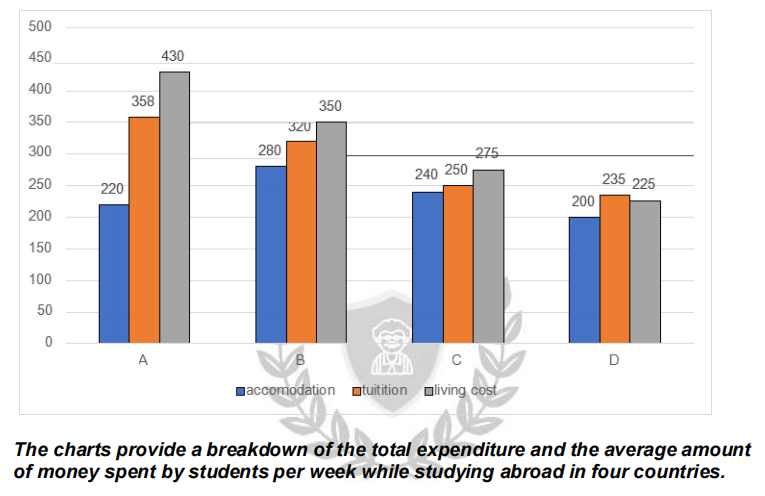

Article
Read the article, then confirm below to continue.
Unraveling the Secrets of Advertising: Deconstructing Marketing Tricks in Ads
How marketers use language, imagery, and psychology to shape our buying decisions — and the eight most common tricks behind the glossy facade.
📄 Open articleComprehension & vocab
Questions on the article you just read, plus ten key words from it.
Comprehension
1. According to the article, what is the main purpose of persuasive language in advertising?
2. What does the "social proof" technique rely on?
3. According to the article, how do advertisers make use of fear and FOMO?
4. What does the article say about influencer endorsements?
5. According to the article, what is the purpose of a strong call to action?
6. What does storytelling in advertising aim to achieve, according to the article?
Vocabulary
Writing Task 1: the article
Background reading on international study costs — study the highlighted language before you write.
■ subject synonyms ■ useful Task 1 chunks
International Higher Education Cost Structures: Comparative Analysis of Weekly Student Expenditure Dynamics
The financial architecture of overseas study exhibits distinct operational variations across key destination markets. Evaluating weekly student financial outflows across major expenditure categories — academic tuition, residential housing, and general living overheads — provides crucial insights into destination affordability, cost-of-living inflation, and institutional pricing policies in global international education.
Expenditure Category Dynamics and Price Distribution
Student financial commitments vary considerably depending on local economic conditions, regional housing markets, and institutional funding structures.
General Living Overhead as a Primary Cost Vector: In premium study destinations, daily subsistence and non-academic personal maintenance represents the single largest expenditure component. High baseline living expenses in tier-one host locations often surpass direct instructional fees, creating a significant total outlay for international scholars.
Tuition Fee Variation and Institutional Pricing: Higher education institutions display broad divergence in their fee structures. While highly commercialised markets maintain high tuition benchmarks relative to other spending categories, more price-competitive international hubs align tuition fees closely with general accommodation and living benchmarks.
Residential Housing Market Pressures: Housing and accommodation overheads constitute a major baseline expense across all observed destinations. In mature urban centres, tight housing availability inflates residential rental rates, pushing them closer to academic instructional costs.
Budget-Oriented Study Destinations: Lower-cost educational markets offer compressed expenditure profiles across all three metrics. In these regions, the cost disparity between tuition, housing, and general living overhead remains remarkably narrow, creating a balanced and predictable weekly budget for enrolled international cohorts.
Comparative Cost Profiles Across Destination Tiers
| Destination Category | Dominant Expenditure Driver | Financial Profile Characteristics |
|---|---|---|
| Tier-1 Premium Hubs | High Living & Maintenance Overhead | Marked by elevated general living expenses and premium tuition rates, representing the highest overall cost threshold. |
| Tier-2 Balanced Markets | Proportional Fee & Housing Split | Features well-proportioned expenditure distribution where tuition fees and living costs maintain structural parity. |
| Tier-3 Cost-Effective Destinations | Compressed Baseline Outlays | Characterised by moderate tuition rates coupled with accessible housing and lower overall living expenditure requirements. |
| Tier-4 Value-Oriented Locations | Uniform Category Costs | Displays tight cost convergence across tuition, housing, and living expenses at the lowest aggregate spending point. |
Task 1 report
Mini exam block — write your response with the stopwatch running.
The chart below shows the average weekly expenditure of students studying abroad in four countries, broken down into accommodation, tuition, and living costs. Summarise the information by selecting and reporting the main features, and make comparisons where relevant. Write at least 150 words.

Sample answer
Model response, with useful comparison language marked.
The table illustrates the average weekly expenditure of students studying abroad in four countries, while the bar chart provides a detailed breakdown of their total spending across three main categories: accommodation, tuition, and living costs.
Overall, students in Country A incur the highest weekly expenditure, followed by those in Country B, while spending in Countries C and D is considerably lower. While students in Countries A and B spend similar amounts on accommodation and tuition, those in the former spend noticeably more on living costs than the latter. In contrast, student expenditure in C and D is more evenly distributed across all categories.
Students in Country A spend the most on average, at $875 per week, which is substantially higher than in other countries. Country B ranks second with $735, which is $140 less than Country A. Expenditure drops significantly in Country C to $540, and reaches its lowest in Country D at $435, just below half the figure for Country A.
Expenditure patterns in Countries A and B are comparable, particularly in terms of accommodation and tuition costs. In Country A, students spend $220 on accommodation and $358 on tuition. By comparison, those in Country B allocate slightly more to housing ($280) and marginally less to tuition ($320). However, the expenditure gap is most dramatic for living costs, where students in Country A spend a significantly higher amount, $430 per week, compared to just $350 in Country B.
Student expenses in Countries C and D are more evenly distributed, with total weekly expenditures amounting to $765 and $660, respectively. In Country C, the majority of student spending goes toward living costs ($275), whereas in Country D, accommodation ($200) accounts for the smallest portion of expenses.
Reading Practice
Open the test in a new tab, complete it, then come back here.
Full Reading Test
40 questions across multiple passages on media literacy, video games, and multitasking. Complete whichever section your teacher assigns.
📖 Open reading passageSpeaking Part 2 & 3
Choose a topic set below. You only get one attempt per question, so make sure you're ready before you start recording.
Video & comprehension
Watch, then answer the questions below.
1. According to the video, what is climate change increasingly being linked to?
2. What happened in the UK in 2022?
3. What did researchers find after studying the effects of the 2022 UK heatwave?
4. Which of the following was mentioned as a mental health effect of extreme heat?
5. Why did sleep disruption contribute to people's difficulties during the heatwave?
6. What did the study involving Hurricane Sandy examine?
7. Why were women particularly affected when schools closed early during the 2022 heatwave?
8. Why are people on lower incomes more vulnerable to extreme heat?
9. What other consequences of climate change can affect people's wellbeing?
10. According to the video, what can help people support their mental wellbeing?
Gap Fill
Word box: mental · psychology · anxiety · heatwave · sleep · distress · isolation · nature · income · prices · disadvantaged · resources · wellbeing · social · environment
1. Researchers are increasingly studying how climate change affects people's health.
2. Climate change is also having an impact on brain health and our inner .
3. The 2022 UK was the hottest year on record in the country.
4. Over half of the people interviewed experienced negative effects on their mental health due to the extreme .
5. Some people experienced severe and emotional distress during the heatwave.
6. Lack of was one of the most commonly reported problems.
7. Having to remain indoors contributed to a sense of among some people.
8. The dried-out parks and green areas triggered climate in some individuals.
9. People from groups were more likely to experience the negative effects of extreme heat.
10. People with more generally have more resources to cope with extreme weather.
11. Climate-related food shortages can cause food to rise.
12. The video explains that climate change can have serious effects on people's .
13. Spending time in spaces can help people cope with stress.
14. The video emphasizes the importance of connection when dealing with climate-related challenges.
15. We are not separate from our ; we are connected to the world around us.
Vocabulary Matching
Day 15 complete! 🎉
All 8 tasks done. Come back tomorrow for the next day.